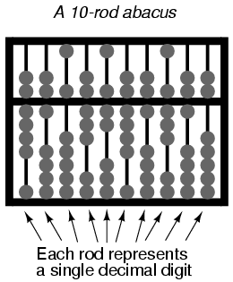

Aritmética Binaria
- Números frente a numeración
- Suma binaria
- Números binarios negativos
- Resta
- Desbordamiento
- Agrupaciones de bits
Números frente a numeración
Es imperativo comprender que el tipo de sistema de numeración utilizado para representar números no tiene impacto en el resultado de ninguna función aritmética (suma, resta, multiplicación, división, raíces, potencias o logaritmos). Un número es un número es un número; uno más uno siempre será igual a dos (siempre que estemos tratando conrealnúmeros), no importa cómo simbolices uno, uno y dos. Un número primo en forma decimal sigue siendo primo si se muestra en forma binaria, octal o hexadecimal. π sigue siendo la relación entre la circunferencia y el diámetro de un círculo, sin importar qué símbolo utilice para indicar su valor. Las funciones esenciales y las interrelaciones de las matemáticas no se ven afectadas por el sistema particular de símbolos que podríamos elegir para representar cantidades. Esta distinción entrenúmeros y sistemas de numeraciónEs fundamental comprenderlo.
La distinción esencial entre los dos es muy parecida a la que existe entre un objeto y las palabras habladas que asociamos con él. Una casa sigue siendo una casa independientemente de si la llamamos por su nombre en inglés.casao su nombre españolcasa. El primero es la cosa real, mientras que el segundo es simplemente el símbolo de la cosa.
Dicho esto, realizar una operación aritmética simple como la suma (a mano) en forma binaria puede resultar confuso para una persona acostumbrada a trabajar únicamente con numeración decimal. En esta lección, exploraremos las técnicas utilizadas para realizar funciones aritméticas simples en números binarios, ya que estas técnicas se emplearán en el diseño de circuitos electrónicos para hacer lo mismo. Es posible que dé por sentado la suma y la resta a mano, después de haber usado una calculadora durante tanto tiempo, pero en lo más profundo del circuito de esa calculadora, todas esas operaciones se realizan "a mano", utilizando numeración binaria. Para comprender cómo se logra esto, debemos repasar los conceptos básicos de la aritmética.
Suma binaria
Sumar números binarios es una tarea muy sencilla y muy similar a la suma manual de números decimales. Al igual que con los números decimales, se comienza sumando los bits (dígitos) en una columna, o colocando el peso, a la vez, de derecha a izquierda. A diferencia de la suma decimal, hay poco que memorizar en cuanto a reglas para la suma de bits binarios:
0 + 0 = 0 1 + 0 = 1 0 + 1 = 1 1 + 1 = 10 1 + 1 + 1 = 11
Al igual que con la suma decimal, cuando la suma en una columna es un número de dos bits (dos dígitos), la cifra menos significativa se escribe como parte de la suma total y la cifra más significativa se "lleva" a la siguiente columna de la izquierda. Considere los siguientes ejemplos:
. 11 1 <--- Carry bits -----> 11 . 1001101 1001001 1000111 . + 0010010 + 0011001 + 0010110 . --------- --------- --------- . 1011111 1100010 1011101
El problema de suma de la izquierda no requería que se transportaran bits, ya que la suma de bits en cada columna era 1 o 0, no 10 u 11. En los otros dos problemas, definitivamente había bits que transportar, pero el proceso de suma sigue siendo bastante simple.
Como veremos más adelante, hay maneras de construir circuitos electrónicos para realizar esta misma tarea de suma, representando cada bit de cada número binario como una señal de voltaje (ya sea "alta" para un 1 o "baja" para un 0). Ésta es la base misma de toda la aritmética que realizan las computadoras digitales modernas.
Números binarios negativos
Como la suma se realiza fácilmente, podemos realizar la operación de resta con la misma técnica simplemente haciendo que uno de los números sea negativo. Por ejemplo, el problema de resta de 7 - 5 es esencialmente el mismo que el problema de suma 7 + (-5). Como ya sabemos cómo representar números positivos en binario, todo lo que necesitamos saber ahora es cómo representar sus contrapartes negativas y podremos restar.
Normalmente representamos un número decimal negativo colocando un signo menos directamente a la izquierda del dígito más significativo, como en el ejemplo anterior, con -5. Sin embargo, el propósito de usar notación binaria es construir circuitos de encendido/apagado que puedan representar valores de bits en términos de voltaje (2 valores alternativos: "alto" o "bajo"). En este contexto, no podemos darnos el lujo de un tercer símbolo como un signo "menos", ya que estos circuitos sólo pueden estar encendidos o apagados (dos estados posibles). Una solución es reservar un bit (circuito) que no haga más que representar el signo matemático:
. 1012 = 510 (positive) . . Extra bit, representing sign (0=positive, 1=negative) . | . 01012 = 510 (positive) . . Extra bit, representing sign (0=positive, 1=negative) . | . 11012 = -510 (negative)
Como puede ver, debemos tener cuidado cuando comenzamos a utilizar bits para cualquier propósito que no sea el de valores ponderados posicionales estándar. De lo contrario, 11012podría malinterpretarse como el número trece cuando en realidad queremos representar menos cinco. Para mantener las cosas claras aquí, primero debemos decidir cuántos bits se necesitarán para representar los números más grandes con los que trataremos, y luego asegurarnos de no exceder la longitud del campo de bits en nuestras operaciones aritméticas. Para el ejemplo anterior, me he limitado a la representación de números desde menos siete (11112) a siete positivos (01112), y nada más, haciendo que el cuarto bit sea el bit de "signo". Sólo estableciendo primero estos límites puedo evitar la confusión de un número negativo con un número positivo mayor.
Representando menos cinco como 11012es un ejemplo de lamagnitud de signosistema de numeración binaria negativa. Al utilizar el bit más a la izquierda como indicador de signo y no como valor ponderado posicional, estoy sacrificando la forma "pura" de notación binaria por algo que me brinda una ventaja práctica: la representación de números negativos. El bit más a la izquierda se lee como signo, ya sea positivo o negativo, y los bits restantes se interpretan según la notación binaria estándar: de izquierda a derecha, coloque los pesos en múltiplos de dos.
Por simple que sea el método signo-magnitud, no es muy práctico para fines aritméticos. Por ejemplo, ¿cómo sumo cinco menos (11012) a cualquier otro número, usando la técnica estándar de suma binaria? Tendría que inventar una nueva forma de hacer la suma para que funcione, y si hago eso, también podría hacer el trabajo con la resta a mano; No hay ninguna ventaja aritmética en usar números negativos para realizar restas mediante sumas si tenemos que hacerlo con numeración de signos y magnitudes, ¡y ese era nuestro objetivo!
Hay otro método para representar números negativos que funciona con nuestra conocida técnica de suma manual y que también tiene más sentido desde el punto de vista de la numeración ponderada por lugares, llamadocomplementación. Con esta estrategia, asignamos el bit más a la izquierda para que tenga un propósito especial, tal como lo hicimos con el enfoque de signo-magnitud, definiendo nuestros límites numéricos como antes. Sin embargo, esta vez, el bit más a la izquierda es más que un simple bit de signo; más bien, posee un valor de peso posicional negativo. Por ejemplo, un valor de menos cinco se representaría así:
Extra bit, place weight = negative eight . | . 10112 = 510 (negative) . . (1 x -810) + (0 x 410) + (1 x 210) + (1 x 110) = -510
Dado que los tres bits de la derecha pueden representar una magnitud de cero a siete, y el bit más a la izquierda representa cero u menos ocho, podemos representar con éxito cualquier número entero desde menos siete (10012= -810 + 110= -710) a siete positivos (01112 = 010 + 710 = 710).
La representación de números positivos en este esquema (con el cuarto bit designado como peso negativo) no es diferente de la notación binaria ordinaria. Sin embargo, representar números negativos no es tan sencillo:
zero 0000 positive one 0001 negative one 1111 positive two 0010 negative two 1110 positive three 0011 negative three 1101 positive four 0100 negative four 1100 positive five 0101 negative five 1011 positive six 0110 negative six 1010 positive seven 0111 negative seven 1001 . negative eight 1000
Tenga en cuenta que los números binarios negativos en la columna de la derecha, que son la suma del total de los tres bits de la derecha más los ocho negativos del bit más a la izquierda, no "cuentan" en la misma progresión que los números binarios positivos en la columna de la izquierda. Más bien, los tres bits de la derecha deben establecerse en el valor adecuado para igualar el total deseado (negativo) cuando se suman con el valor negativo de ocho posiciones del bit más a la izquierda.
Esos tres bits derechos se conocen comocomplemento a dosdel número positivo correspondiente. Considere la siguiente comparación:
positive number two's complement --------------- ---------------- 001 111 010 110 011 101 100 100 101 011 110 010 111 001
En este caso, siendo el bit de peso negativo el cuarto bit (valor posicional de ocho negativos), el complemento a dos para cualquier número positivo será cualquier valor necesario para sumar a ocho negativos para obtener el equivalente negativo de ese valor positivo. Afortunadamente, hay una manera fácil de calcular el complemento a dos de cualquier número binario: simplemente invierta todos los bits de ese número, cambiando todos los unos por ceros y viceversa (para llegar a lo que se llamacomplemento de uno) y luego agrega uno. Por ejemplo, para obtener el complemento a dos de cinco (1012), primero invertiríamos todos los bits para obtener 0102(el "complemento a uno"), luego suma uno para obtener 0112, o -510en forma de complemento a dos de tres bits.
Curiosamente, generar el complemento a dos de un número binario funciona igual si manipulasalllos bits, incluido el bit más a la izquierda (signo) al mismo tiempo que los bits de magnitud. Intentemos esto con el ejemplo anterior, convirtiendo un cinco positivo en un cinco negativo, pero realizando el proceso de complementación en los cuatro bits. Debemos asegurarnos de incluir el bit de signo 0 (positivo) en el número original, cinco (01012). Primero, invirtiendo todos los bits para obtener el complemento a uno: 10102. Luego sumando uno obtenemos la respuesta final: 10112, o -510expresado en forma de complemento a dos de cuatro bits.
Es de vital importancia recordar que el lugar del bit de peso negativo ya debe estar determinado antes de poder realizar cualquier conversión en complemento a dos. Si nuestro campo de numeración binaria fuera tal que el octavo bit fuera designado como bit de peso negativo (100000002), tendríamos que determinar el complemento a dos basándose en los siete bits restantes. Aquí, el complemento a dos de cinco (00001012) sería 11110112. Un cinco positivo en este sistema se representaría como 000001012y un cinco negativo como 111110112.
Resta
Podemos restar un número binario de otro utilizando las técnicas estándar adaptadas para números decimales (resta de cada par de bits, de derecha a izquierda, "tomar prestado" según sea necesario de los bits de la izquierda). Sin embargo, si podemos aprovechar la técnica ya familiar (y más sencilla) de la suma binaria para restar, sería mejor. Como acabamos de aprender, podemos representar números binarios negativos utilizando el método del "complemento a dos" y un bit de peso posicional negativo. Aquí, usaremos esos números binarios negativos para restar mediante suma. Aquí hay un problema de muestra:
Subtraction: 710 - 510 Addition equivalent: 710 + (-510)
Si todo lo que necesitamos hacer es representar siete y menos cinco en forma binaria (complementado a dos), todo lo que necesitamos son tres bits más el bit de peso negativo:
positive seven = 01112 negative five = 10112
Ahora, sumémoslos:
. 1111 <--- Carry bits . 0111 . + 1011 . ------ . 10010 . | . Discard extra bit . . Answer = 00102
Como ya hemos definido nuestro campo de bits numéricos como tres bits más el bit de peso negativo, el quinto bit de la respuesta (1) se descartará para darnos un resultado de 0010.2, o positivo dos, que es la respuesta correcta.
Otra forma de entender por qué descartamos ese bit extra es recordar que el bit más a la izquierda del número inferior posee un peso negativo, en este caso igual a menos ocho. Cuando sumamos estos dos números binarios, lo que en realidad estamos haciendo con los MSB es restar el MSB del número inferior del MSB del número superior. En la resta, nunca se "lleva" un dígito o un bit al siguiente peso posicional izquierdo.
Probemos con otro ejemplo, esta vez con números mayores. Si queremos sumar -2510a 1810, primero debemos decidir qué tan grande debe ser nuestro campo de bits binarios. Para representar el número más grande (valor absoluto) de nuestro problema, que es veinticinco, necesitamos al menos cinco bits, más un sexto bit para el bit de peso negativo. Comencemos representando el positivo veinticinco, luego encontremos el complemento a dos y juntemos todo en una sola numeración:
+2510 = 0110012 (showing all six bits) One's complement of 110012 = 1001102 One's complement + 1 = two's complement = 1001112 -2510 = 1001112
Esencialmente, estamos representando menos veinticinco usando el bit de peso negativo (sexto) con un valor de menos treinta y dos, más siete positivos (binario 111).2).
Ahora, representemos dieciocho positivos en forma binaria, mostrando los seis bits:
. 1810 = 0100102 . . Now, let's add them together y see what we get: . . 11 <--- Carry bits . 100111 . + 010010 . -------- . 111001
Como no había bits "extra" a la izquierda, no hay bits que descartar. El bit más a la izquierda de la respuesta es un 1, lo que significa que la respuesta es negativa, en forma de complemento a dos, como debería ser. Al convertir la respuesta a forma decimal sumando todos los bits multiplicados por sus respectivos valores de peso, obtenemos:
(1 x -3210) + (1 x 1610) + (1 x 810) + (1 x 110) = -710
De hecho -710es la suma adecuada de -2510y 1810.
Desbordamiento
Una advertencia con los números binarios con signo es la derebosar, donde la respuesta a un problema de suma o resta excede la magnitud que se puede representar con el número de bits asignado. Recuerde que el lugar del bit de signo está fijado desde el inicio del problema. En el último problema de ejemplo, utilizamos cinco bits binarios para representar la magnitud del número y el bit más a la izquierda (sexto) como bit de peso negativo o signo. Con cinco bits para representar la magnitud, tenemos un rango de representación de 25, o treinta y dos pasos enteros desde 0 hasta el máximo. Esto significa que podemos representar un número tan alto como +31.10(0111112), o tan bajo como -3210(1000002). Si configuramos un problema de suma con dos números binarios, el sexto bit se usa como signo y el resultado excede +3110o es menor que -3210, nuestra respuesta será incorrecta. Intentemos sumar 1710y 1910Para ver cómo funciona esta condición de desbordamiento para números positivos excesivos:
. 1710 = 100012 1910 = 100112 . . 1 11 <--- Carry bits . (Showing sign bits) 010001 . + 010011 . -------- . 100100
La respuesta (1001002), interpretado con el sexto bit como -3210lugar, en realidad es igual a -2810, no +3610como deberíamos llegar con +1710y +1910¡sumados juntos! Obviamente, esto no es correcto. ¿Qué salió mal? La respuesta está en las restricciones del campo numérico de seis bits dentro del cual estamos trabajando. Desde la magnitud de la suma verdadera y propia (3610) excede el límite permitido para nuestro campo de bits designado, tenemos unerror de desbordamiento. En pocas palabras, seis lugares no dan suficientes bits para representar la suma correcta, por lo que cualquier cifra que obtengamos usando la estrategia de descartar el bit "carry" más a la izquierda será incorrecta.
Se producirá un error similar si sumamos dos números negativos para producir una suma demasiado baja para nuestro campo binario de seis bits. Intentemos sumar -1710y -1910juntos para ver cómo funciona esto (¡o no funciona, según sea el caso!):
. -1710 = 1011112 -1910 = 1011012 . . 1 1111 <--- Carry bits . (Showing sign bits) 101111 . + 101101 . -------- . 1011100 . | . Discard extra bit . FINAL ANSWER: 0111002 = +2810
La respuesta (incorrecta) es unapositivoveintiocho. El hecho de que la suma real de menos diecisiete y menos diecinueve fuera demasiado baja para representarse adecuadamente con un campo de magnitud de cinco bits y un sexto bit de signo es la causa fundamental de esta dificultad.
Intentemos estos dos problemas nuevamente, excepto que esta vez usamos el séptimo bit como bit de signo y permitimos el uso de 6 bits para representar la magnitud:
. 1710 + 1910 (-1710) + (-1910) . . 1 11 11 1111 . 0010001 1101111 . + 0010011 + 1101101 . --------- --------- . 01001002 110111002 . | . Discard extra bit . . ANSWERS: 01001002 = +3610 . 10111002 = -3610
Al utilizar campos de bits suficientemente grandes para manejar la magnitud de las sumas, llegamos a las respuestas correctas.
En estos problemas de muestra hemos podido detectar errores de desbordamiento al realizar los problemas de suma en forma decimal y comparar los resultados con las respuestas binarias. Por ejemplo, al agregar +1710y +1910Juntos supimos que la respuesta erasupuestoser +3610, entonces cuando la suma binaria resultó ser -2810, sabíamos que algo tenía que estar mal. Aunque esta es una forma válida de detectar desbordamiento, no es muy eficiente. Después de todo, la idea de la complementación es poder sumar números binarios de manera confiable y no tener que verificar dos veces el resultado sumando los mismos números en forma decimal. Esto es especialmente cierto cuando se construyen circuitos electrónicos para sumar cantidades binarias: el circuito debe poder comprobar si se desborda sin la supervisión de un ser humano que ya sepa cuál es la respuesta correcta.
Lo que necesitamos es un método simple de detección de errores que no requiera ninguna aritmética adicional. Quizás la solución más elegante sea comprobar lafirmarde la suma y compararla con los signos de los números sumados. Obviamente, dos números positivos sumados deberían dar un resultado positivo, y dos números negativos sumados deberían dar un resultado negativo. Observe que siempre que tuvimos una condición de desbordamiento en los problemas de ejemplo, el signo de la suma siempre fueopuestode los dos números sumados: +1710más +1910dando -2810, o -1710más -1910dando +2810. Sólo con comprobar las señales podemos darnos cuenta de que algo anda mal.
Pero ¿qué pasa con los casos en los que se suma un número positivo a un número negativo? ¿Qué signo debe tener la suma para que sea correcta? O, más precisamente, ¿qué signo de suma indicaría necesariamente un error de desbordamiento? La respuesta a esto es igualmente elegante: habránunca¡Será un error de desbordamiento cuando se sumen dos números de signos opuestos! La razón de esto es evidente cuando se considera la naturaleza del desbordamiento. El desbordamiento ocurre cuando la magnitud de un número excede el rango permitido por el tamaño del campo de bits. La suma de dos números con signos idénticos puede muy bien exceder el rango del campo de bits de esos dos números, por lo que en este caso el desbordamiento es una posibilidad. Sin embargo, si se suma un número positivo a un número negativo, la suma siempre será más cercana a cero que cualquiera de los dos números sumados: su magnituddebeser menor que la magnitud de cualquiera de los números originales, por lo que el desbordamiento es imposible.
Afortunadamente, esta técnica de detección de desbordamiento se implementa fácilmente en circuitos electrónicos y es una característica estándar en los circuitos sumadores digitales: un tema para un capítulo posterior.
Agrupaciones de bits
La razón singular para aprender y utilizar el sistema de numeración binaria en electrónica es comprender cómo diseñar, construir y solucionar problemas de circuitos que representan y procesan cantidades numéricas en forma digital. Dado que el sistema bivalente (de dos valores) de numeración de bits binarios se presta tan fácilmente a la representación mediante estados de transistores "encendidos" y "apagados" (saturación y corte, respectivamente), tiene sentido diseñar y construir circuitos aprovechando este principio para realizar cálculos binarios.
Si tuviéramos que construir un circuito para representar un número binario, tendríamos que asignar suficientes circuitos de transistores para representar tantos bits como deseemos. En otras palabras, al diseñar un circuito digital, primero debemos decidir cuántos bits (máximo) nos gustaría poder representar, ya que cada bit requiere un circuito de encendido/apagado para representarlo. Esto es análogo a diseñar un ábaco para representar digitalmente números decimales: debemos decidir cuántos dígitos queremos manejar en este primitivo dispositivo de "calculadora", ya que cada dígito requiere una varilla separada con sus propias cuentas.

Un ábaco de diez varillas podría representar un número decimal de diez dígitos, o un valor máximo de 9.999.999.999. Si quisiéramos representar un número mayor en este ábaco, no podríamos hacerlo, a menos que se le pudieran agregar varillas adicionales.
En el diseño de computadoras electrónicas digitales, es común diseñar el sistema para un "ancho de bits" común: un número máximo de bits asignados para representar cantidades numéricas. Las primeras computadoras digitales manejaban bits en grupos de cuatro u ocho. Los sistemas más modernos manejan números en grupos de 32 bits o más. Para expresar más convenientemente el "ancho de bits" de dichos grupos en una computadora digital, se aplicaron etiquetas específicas a los grupos más comunes.
Ocho bits, agrupados para formar una única cantidad binaria, se conocen comobyte. Cuatro bits, agrupados como un número binario, reciben el jocoso título depicar, a menudo escrito comomordisquear.
Una multitud de términos han seguido a byte y nibble para etiquetar agrupaciones específicas de bits binarios. La mayoría de los términos que se muestran aquí son informales y ningún grupo de estándares u otro organismo sancionador los ha considerado "autorizados". Sin embargo, su inclusión en este capítulo está justificada por su aparición ocasional en la literatura técnica, así como por la ligereza que añaden a un tema que de otro modo sería aburrido:
- Bit: Unidad única y bivalente de notación binaria. Equivale a un "dígito" decimal.
- Miga, Un bocado, otayste: Dos bits.
- Picar, omordisquear: Cuatro bits.
- níquel: Cinco bits.
- Byte: Ocho bits.
- Usar tímpano: Diez bits.
- Playte: Dieciséis bits.
- Dinero: Treinta y dos bits.
- Palabra: (dependiente del sistema).
El término más ambiguo con diferencia espalabra, refiriéndose a la agrupación de bits estándar dentro de un sistema digital particular. Para un sistema informático que utiliza una "ruta de datos" de 32 bits de ancho, una "palabra" significaría 32 bits. Si el sistema utilizara 16 bits como agrupación estándar para cantidades binarias, una "palabra" significaría 16 bits. los términosplayte y cena, por el contrario, siempre se refieren a 16 y 32 bits, respectivamente, independientemente del contexto del sistema en el que se utilicen.
La dependencia del contexto también es cierta para los términos derivados depalabra, comodoble palabra y palabra larga(ambos significan el doble del ancho de bits estándar),media palabra(la mitad del ancho de bits estándar), ypatio(es decir, cuatro veces el ancho de bits estándar). Una adición divertida a esta colección un tanto aburrida depalabra-derivados es el términochamp, que significa lo mismo quemedia palabra. Por ejemplo, unchampSerían 16 bits en el contexto de un sistema digital de 32 bits y 18 bits en el contexto de un sistema de 36 bits. Asimismo, el términocharlara veces es sinónimo depalabra.
Las definiciones de los términos de agrupación de bits se tomaron del "Jargon Lexicon" de Eric S. Raymond, una colección indexada de términos, tanto comunes como oscuros, relacionados con el mundo de la programación informática.
Lecciones en circuitos eléctricoscopyright (C) 2000-2023 Tony R. Kuphaldt, según los términos y condiciones delCC BY License.